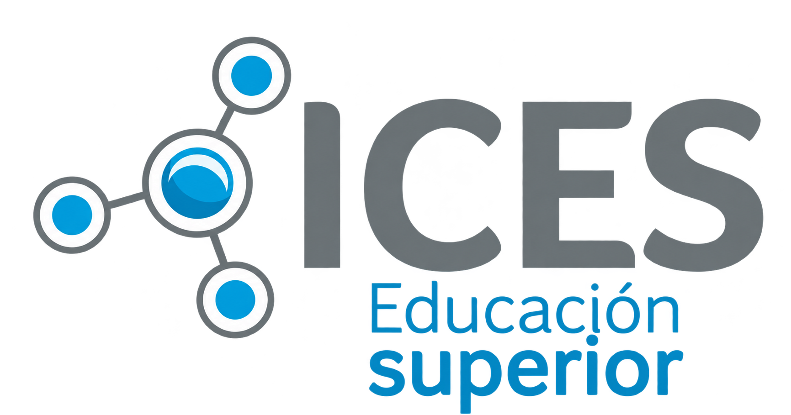

Laboratorio de ideas
¿Y si pudieras mejorar tu escuela con una app?Probá cómo piensa un equipo de Desarrollo de Software.
Se borrarán tus respuestas de este navegador y volverás al principio de la experiencia.